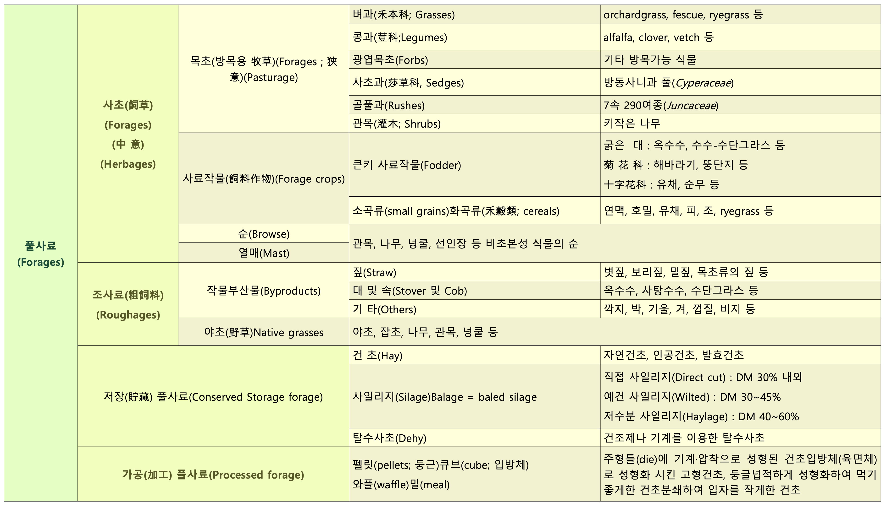

Chapter 1 Introduction
사료는 가축이나 가금 따위에게 주는 먹이를 말한다. 가축이 생명유지 및 생산활동에 필요로 하는 각종 영양소를 함유하고 있는 유기 또는 무기의 물질로 일반적으로 조사료, 농후사료, 특수사료로 나눈다(축산학적 의미). 「축산법」에 따른 가축이나 그 밖에 농림축산식품부장관이 정하여 고시하는 동물·어류 등에 영양이 되거나 그 건강유지 또는 성장에 필요한 것으로서 단미사료·배합사료 및 보조사료를 말한다. 다만, 동물용의약으로서 섭취하는 것을 제외한다(사료관리법).
1.1 풀사료
- 조사료(粗飼料, bulky feed, roughage)는 지방, 단백질, 전분 등의 함량이 적고 섬유질이 18% 이상 되는 사료, 청초, 건초 따위로 반대는 농후사료(濃厚飼料, concentrates)이다.
- 조사료(forage, roughage)는 “가축의 사료 중 일반적으로 부피에 비하여 가소화영양소 함량이 적고 섬유질이 많은 사료의 총칭, 이에는 각종 짚류(straw), 건초류(hay), 생초류와 청예작물 그리고 사일리지와 근채류 등이 포함된다” (한국영양사료학회, 1995)
- 조사료는 짚(straws), 대(stover), 깍지 및 식물부산물 등으로 지방, 단백질, 전분 등의 함량이 적고 섬유질이 18%이상인 풀사료
- 풀사료는 조사료, 양질조사료, 기타 식물성 잎과 줄기 등을 모두 포함하는 사료
1.2 풀사료의 분류

1.3 풀사료의 평가
1.3.1 풀사료를 평가하는 이유
- 풀사료를 가장 효과적으로 이용하고 생산성을 최대로 높이기 위하여
- 영양가의 차이가 매우 심하기 때문(단백질 함량 : 알팔파; 10∼25%, 벼과 건초; 4∼20%)
- 가축의 영양소 요구량은 천차만별(축종, 시기, 상태 등). 즉, 생산성이 높거나 영양소 요구량이 많을때 가장 좋은 풀사료를, 요구량이 낮은 가축이나 시기에는 저질의 풀사료 급여하는 것이 경제적이기 때문
- 시장의 올바른 유통을 위하여(객관적인 유통가격 결정자료로 이용되어, 풀사료에 대한 정확한 지식이 없는 농가의 피해를 줄이기 위함)
- 올바른 사료배합(특정가축의 요구량에 맞는 사료를 배합할 때 어느 사료를 얼마만큼 넣는 것이 경제적인지를 판단하는 자료로 이용)
- 단위면적당 생산성을 높이기 위하여
1.3.2 평가방법
- 관능검사(官能檢査, visual appraisal, Physical : 사람의 오감(五感)을 통하여 평가하는 방법),
- 화학적 분석(Chemical analysis)
- 근적외선 분광측정기(NIRS; Near infrared reflectance spectroscopy)
- In vivo 및 in vitro
- 사양시험(digestion or feeding trial)
1.3.3 풀사료의 영양가치에 영향을 미치는 요인
- 초종과 품종(Plant species and variety)
- 숙기(Maturity)
- 잎의 비율(Leafiness)
- 수확(Harvest)
- 저장(Storage) 방법과 저장 기술
- 환경(Environment)
1.3.4 축우사료에서 풀사료의 중요성
1.3.4.1 반추가축의 소화생리
가. 반추위내의 미생물의 기능
- 섬유소의 분해
- 아미노산의 합성
- Vit. B, K의 합성
- 미생물유체로서 영양소의 공급
나. 반추위의 소화율
다. 반추위 내에서의 사료의 소화
- 휘발성지방산(VFA, volatile fatty acid))의 생성
- 조사료 위주 : 반추위의 초산 증가(초산 : 에너지원, 유지방합성 원료)
- 농후사료 위주 : 반추위의 프로피온산 증가(프로피온산 : 에너지원, 체지방합성 원료)
1.3.4.2 반추위의 정의와 발달
- 반추위: 반추동물의 제1위와 제2위(1위만을 의미하기도 함). 1위와 2위는 큰 구멍으로 연결되어 있고 내용물 이동이 자유로우며 소화기능상의 차이가 없음.
- 갓 태어났을 때 : 4위보다 작고 기능도 거의 없음. 미생물도 서식하지 않음
- 조사료 섭취 개시 후 : 급격히 발달이 촉진
- 생후 3개월 이후 제1위만의 무게가 체중의 20%, 소화기관 중에서 가장 큰 기관으로 성장
- 생후 6개월 이후 : 모든 위의 80% 이상 차지.
- 조사료에 의한 물리적 자극.
- 성장 초기에 조사료를 충분히 공급하여야 반추위가 충실하게 발달
- 육성기 사육방법이 중요한 이유.
1.3.5 풀사료의 특성 및 중요성
사료가치: TDN과 CP의 함량은 농후사료에 비해 상대적을 낮으나, 무기물(Ca, P, Cu 등) vitamin 등이 높고, 각종 영양소가 완벽하게 조화를 이루고 있어, 단일사료로 급여하여도 안전한 생산에 문제가 없다.
정상적인 생리기능유지: 조사료부족시 소화기장해(제4위전위증, 제엽염, 과산증, 과비증후군) 유지율저하, 번식장해 발생
자급조사료의 경우 경제성과 사료수급의 안정성 향상
인간의 식량과 경합이 없다